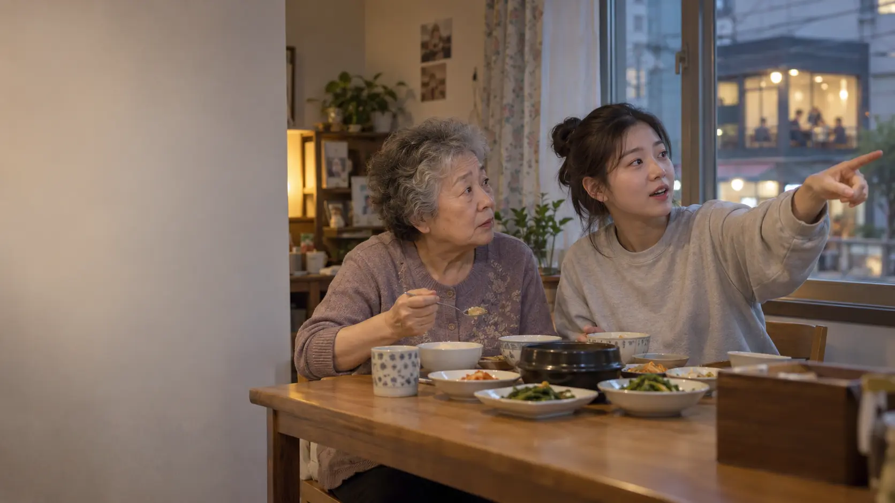
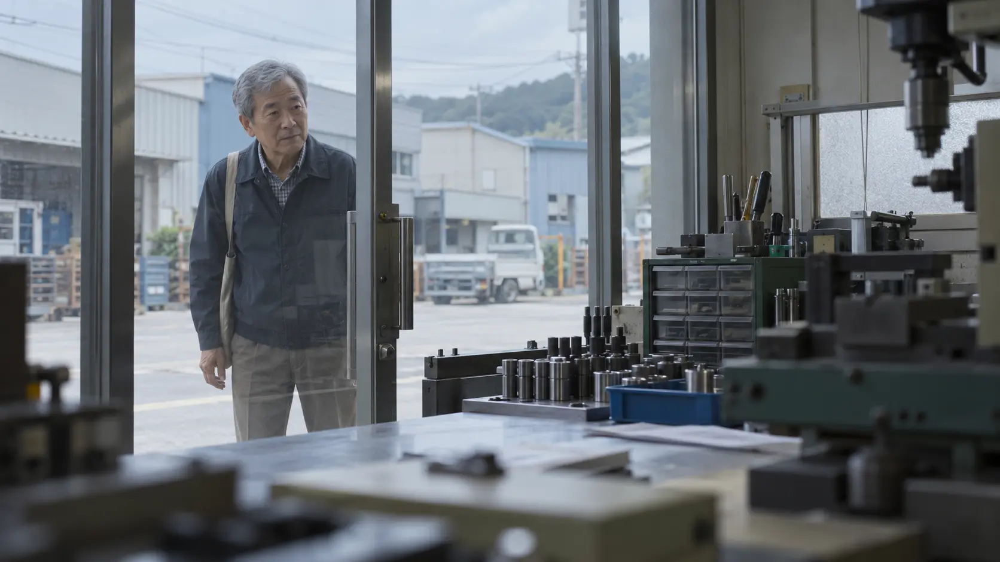

ALBAMON IMC CAMPAIGN PROPOSAL
알바엔, 알 바가 많으니까.
CAMPAIGN 〈알 바〉
01 / ASSIGNMENT
좋은 알바를 고르는 기준을,
알바몬만의 언어로 경험시키는 것.
알바몬에는 지원 전에 확인할 수 있는 네 가지 정보가 있습니다.
- 기업인증
- 근로계약서 관련 정보
- 4대보험 관련 정보
- 성희롱 예방교육 수료 여부
이번 과제는 이 정보를 행정적인 체크리스트로 설명하는 대신, 사람들이 자연스럽게 기억하고 활용하는 선택 기준으로 만드는 일입니다.
02 / CATEGORY PROBLEM
시급 · 거리 · 공고 수 · 빠른 지원 · 쉬운 검색
알바 플랫폼의 경쟁은
‘더 빨리 찾는 법’에 익숙합니다.
FIND
→
CHOOSE
이제는 발견 이후의 질문이 필요합니다.
“그래서, 이 알바를 골라도 될까?”
03 / HUMAN INSIGHT
사람들은 알바를 안다고 생각하지만
정작 ‘알 바’는
모릅니다.
손녀 “나 저 앞 카페 알바 가려고.”
할머니 “거기? 내가 잘 알지.
아홉 시에 문 열고 딸기빙수가 맛있어.”
손녀 “일하기도 괜찮아?”
할머니 “그걸 내가 우째 아노.
내가 손님이지, 직원이가.”
손님으로 잘 아는 장소와
일하는 사람으로 알아야 할 일터는 다릅니다.
04 / BRAND TRUTH
네 가지 기능을
생활의 질문으로 번역합니다.
기능은 브랜드가 가진 것이고,
질문은 사람이 실제로 필요한 것입니다.
어떤 약속을 남기는지
보호할 준비가 됐는지
존중할 준비가 됐는지

STRATEGIC REFRAME
알바 = 공고를 찾고 지원하는 것
알바 = 알 바를
확인하고 고르는 것
알바몬은 알바를 대신 골라주지 않습니다.
대신 제대로 고를 수 있도록 판단의 근거를 보여줍니다.
05 / BIG IDEA
CAMPAIGN 〈알 바〉
알바엔, 알 바가 많으니까.
‘알바’라는 익숙한 단어 안에서, 일하기 전에 알아야 할 ‘알 바’를 발견합니다. 알바몬의 정보를 기능명이 아니라 좋은 알바를 고르는 생활 언어로 바꿉니다.
06 / WHY THIS IDEA
Brand Fit
알바몬이 실제로 가진 정보가 없으면 성립하지 않습니다.
Human Truth
익숙한 장소를 일터까지 잘 안다고 믿는 생활 속 착각에서 출발합니다.
Memory
‘알바’와 ‘알 바’의 전환으로 브랜드와 메시지를 동시에 기억시킵니다.
Extendability
업종과 인물이 바뀌어도 계속 새로운 ‘알 바’를 만들 수 있습니다.
07 / HERO FILM
〈내가 손님이지, 직원이가〉
상황은 설계하되,
반응은 열어둡니다.
- 01 손녀가 할머니에게 집 앞 카페 알바 이야기를 꺼냅니다.
- 02 할머니는 메뉴와 영업시간을 지나치게 자세히 설명합니다.
- 03 “그런데 거기, 일하기도 괜찮아?” 질문이 바뀝니다.
- 04 “내가 손님이지, 직원이가.” 짧은 정적 뒤 생활의 답이 나옵니다.
- 05 알바몬이 그들이 몰랐던 일터의 정보를 보여줍니다.
08 / CASTING & DIRECTION
‘평범해 보이는 배우’가 아니라
실제 관계를 캐스팅합니다.
CAST
실제 할머니와 손녀, 실제 주민과 단골, 실제 알바 구직자. 대사를 잘 외우는 사람보다 자기 말과 리듬이 있는 사람을 찾습니다.
DIRECT
상황과 질문 순서만 정합니다. 말이 겹치고, 서로 정정하고, 질문 뒤 잠시 멈추는 순간까지 광고의 일부로 남깁니다.
09 / COPY SYSTEM
HERO
알바엔, 알 바가 많으니까.
누가 구하는지, 알 바.
어떤 약속을 남기는지, 알 바.
보호할 준비가 됐는지, 알 바.
사람을 존중할 준비가 됐는지, 알 바.
10 / IMC EXPANSION
같은 포스터를 반복하지 않고,
접점마다 다른 ‘알 바’를 발견하게 합니다.
실제 대화
잘 아는 장소와 모르는 일터의 차이를 인물의 솔직한 반응으로 발견합니다.
주변 일터 질문
“여기까지 몇 분인지는 압니다. 여기서 어떻게 일할지는요?” 주변 공고로 연결합니다.
이 동네, 어디까지 알아요?
가게에 관한 질문을 일터에 관한 질문으로 전환하는 주민 인터뷰 숏폼입니다.
이 알바의 알 바
공고에서 확인 가능한 정보를 하나의 캠페인 언어로 묶어 실제 판단 행동으로 연결합니다.
ALBAMON BRAND ROLE
알바몬은
알바의 알 바를
보여줍니다.
알바를 대신 골라주는 플랫폼이 아니라,
내가 제대로 알고 고를 수 있도록 판단의 근거를 보여주는 플랫폼.
알바엔, 알 바가 많으니까.